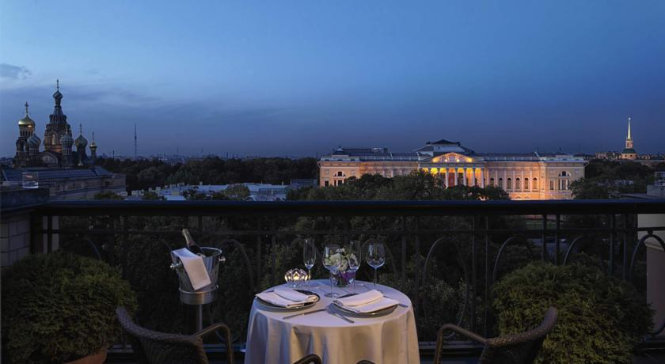

Бельмонд Гранд Отель Европа


Этот 5-звездочный гранд-отель с элегантными номерами прекрасно расположен в центре Санкт-Петербурга.
Роскошные номера гранд-отеля «Бельмонд Европа» со вкусом оформлены и оснащены всеми современными удобствами.
Также в распоряжении гостей гранд-отеля «Бельмонд Европа» фитнес-центр, солярий, сауна, массажный кабинет и другие превосходные удобства. Кроме того, для спокойного отдыха в отеле можно воспользоваться услугами няни, глажки и чистки обуви.
Недалеко от отеля расположены многочисленные театры, музеи и достопримечательности, включая площадь Искусств, Адмиралтейство и бывшую царскую резиденцию Зимний дворец. На хорошо известном Невском проспекте находятся разнообразные магазины, бары и кафе.
В гранд-отеле «Бельмонд Европа» можно посетить 6 ресторанов и кафе, где подают вкусные блюда и прохладительные напитки. Внимательные и профессиональные сотрудники в любое время суток готовы оказать гостям помощь.
Для деловых путешественников в гранд-отеле «Бельмонд Европа» оборудованы конференц-залы с новейшими аудио- и видеотехнологиями, а также 5-звездочными бизнес-услугами.
Это любимая часть города Санкт-Петербург среди наших гостей согласно независимым отзывам.
Мы говорим на вашем языке!
Бельмонд Гранд Отель Европа — принимает гостей с 23 июля 2009
Номеров в отеле: 266, Сеть отелей: Belmond Hotels